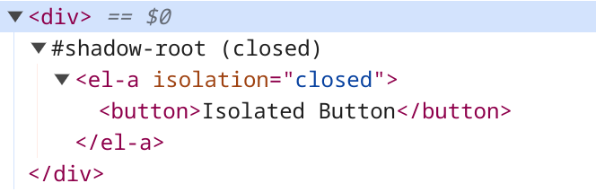

Component Isolation
Adapter provides an API to entirely isolate itself inside Shadow DOM.
Different from other Web Component Frameworks, Adapter choose
another approach to be fully contained within the Shadow DOM.
This can simplifies CSS as there's no need to use :host selector
and the DOM structure will be the same whether using Shadow DOM or not.
💁♀️ Adapter allows you to decide whether to use Shadow DOM when you utilize components in the DOM, rather than during the design or creation of components.

Example
class ElementA extends Adapter {};
ElementA.define('el-a');
<button>Global Styled Button</button>
<el-a isolation="open">
<button>Isolated Button</button>
</el-a>
Result
And this is the rendered DOM for <el-a>
💁♀️ For someone who curious what will happen if components are moved or removed from the DOM, Adapter will handle it for you.
hostandcomponentwill always stick together even when you move for remove the component itself.
Closed Shadow DOM : <el-a isolation="closed">
This option will create host isolator with Closed Shadow DOM
<el-a isolation="closed">
<button>Isolated Button</button>
</el-a>
Result
This is the rendered DOM
A Closed Shadow DOM can prevent manipulation from other JavaScript code spaces,
such as within other <script> tags, for example.